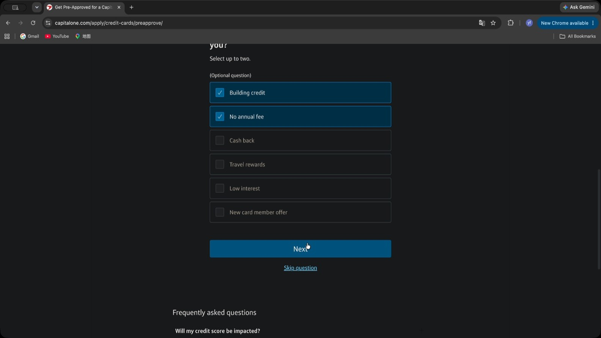
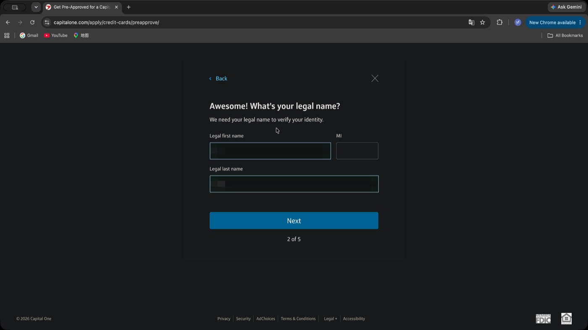
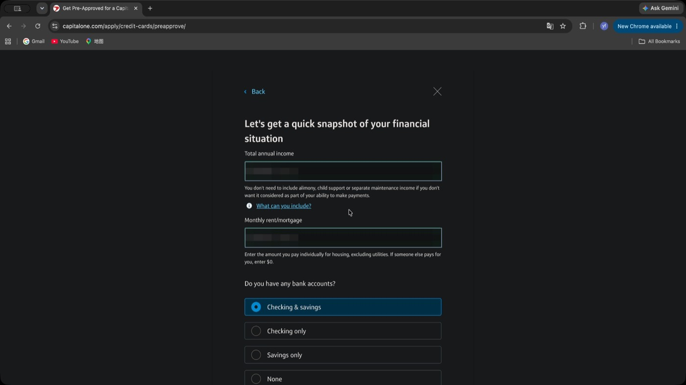
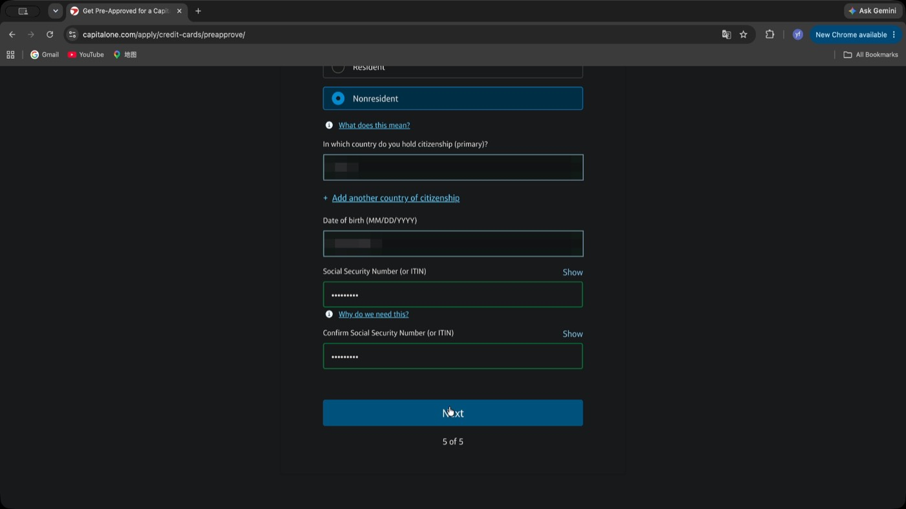
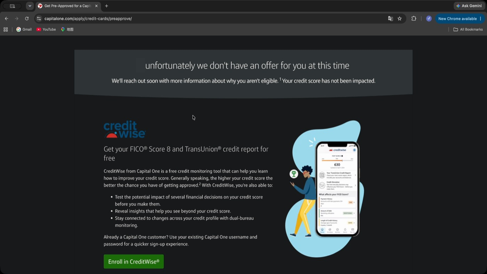
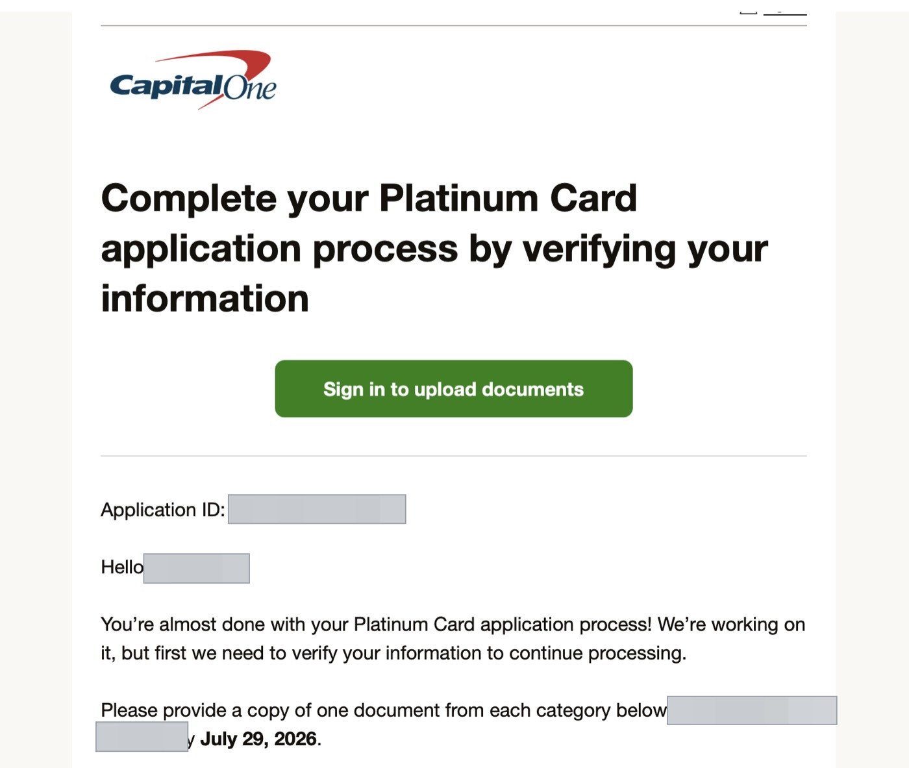
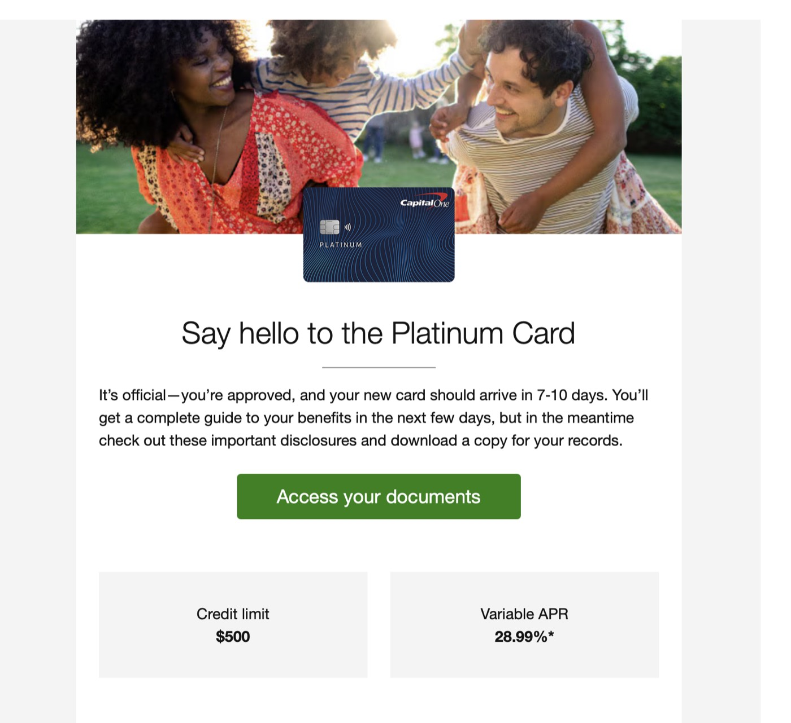
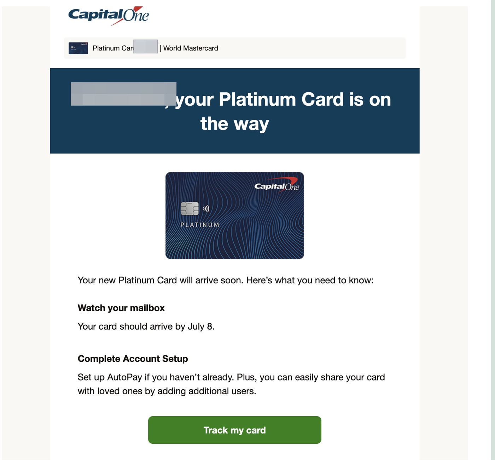
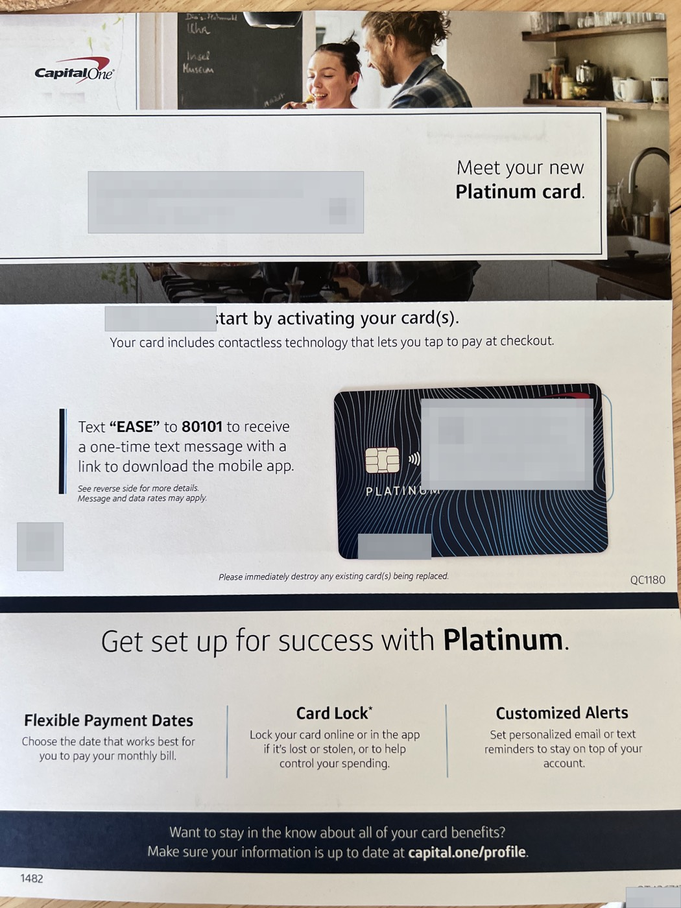

先说明：文中的姓名、地址、收入和选项只用于说明表格结构，不是可以照抄的答案。申请人必须根据自己的证件、财务情况和真实身份填写。本文不保证预审批、正式获批、额度或利率结果。
这是我用 ITIN 申请第一张 Capital One 美国信用卡的真实经历。我会严格按照实际顺序，说明每一步做了什么、为什么这样做，以及完成后看到了什么。
第一步：先确认资料是否准备完整
在打开申请页面以前，我先整理了五类资料。它们并不意味着任何人只要准备齐全就一定能申请或获批，但信息真实、准确且彼此一致，是进入审核流程的基础。
1. 有效 ITIN
ITIN 是 IRS 发放的九位个人纳税人识别号码。我的第一项检查，是把护照与 ITIN 文件放在一起核对姓名拼写、名字顺序、空格和中间名，并再次确认号码输入无误。
在我的申请过程中，Capital One 后续要求补件时，IRS 的 ITIN 文件被用作 ITIN 证明。ITIN 本身不是美国身份、绿卡或工作许可，也不代表银行一定会批准信用卡。
2. 长期可用的美国手机号
我使用的是自己长期管理、能够接收短信和电话的美国手机号。申请期间可能需要验证码、资料更新通知或银行来电，获批后这个号码还会继续用于账户安全与验证。
我不会使用临时接码号码，也不会使用申请后马上失效的号码。填写前，最好先确认短信和电话功能都正常。
3. 真实、可长期收件的美国地址
我提前确认了完整的街道、门牌号、公寓或房间号、城市、州和 ZIP Code，并确保自己有权使用且能够实际收件。补件信、审批信、欢迎资料和实体卡都可能寄到这里。
地址不能只存在于申请表里。请按照当前官方表格对 residential address 和 mailing address 的要求如实填写，不要使用无法接收邮件或与本人没有真实关系的地址。
4. 稳定一致的网络与设备
我在整个填写过程中使用同一台设备和稳定的网络环境，避免频繁切换地区、设备和 IP，减少账户安全验证和风控误判。
VPN、住宅 IP 或某一种特定网络类型不是本文所说的“必须条件”。重点是合法、稳定、干净、长期一致的使用习惯，不是绕过审核或规避风控。
5. 有效护照
我提前准备了有效期内护照个人信息页的清晰彩色扫描件。页面四个边角完整，姓名、出生日期、照片和护照号码可以清楚阅读，没有反光，也没有用修图软件改变文件内容。
第二步：提交以前先把资料对齐
在打开预审批页面前，我做了一次完整核对：
- 护照姓名与 ITIN 文件姓名一致；
- 地址是本人真实有权使用、能够收件的地址；
- 手机号可以长期使用并接收短信和电话；
- 邮箱可以随时登录，且已开启合适的安全保护；
- 护照和 ITIN 证明文件清晰、完整；
- 设备和网络环境保持稳定一致。
如果发现姓名、地址或联系方式不一致，应先确认正确资料，再开始申请。不要为了迎合某个结果，在不同提交之间随意更改真实信息。
第三步：进入 Capital One 官方预审批页面
我的实际流程是从朋友的邀请链接进入，然后确认最终打开的是 Capital One 官方预审批页面。无论从哪里进入，都应先检查域名是否属于 capitalone.com，再输入个人资料。
Capital One 官方预审批页面目前说明，检查预审批不会影响信用分，并可能在较短时间内显示可选 offer。但页面内容会变化，请以你访问时的官方说明为准。
预审批不等于最终获批。看到 offer 只代表系统当时认为可能匹配某张卡；接受 offer 后仍可能进一步审核、要求补件或给出不同结果。邀请链接也不应被理解为提高通过率的保证。
第四步：按页面顺序完成预审批
我当时看到的流程分为多个页面。界面日后可能调整，但填写原则不变：每一项都以申请当时的真实情况为准。
第 1 页：选择用卡目标
页面询问我最看重信用卡的哪些功能，包括 Building credit、No annual fee、Cash back、Travel rewards 和 Low interest 等选项。我的目标是从零建立信用，而且第一张卡不想承担年费，所以当时选择了 Building credit 和 No annual fee。

第 2 页：Legal name
Legal first name、Middle Initial 和 Legal last name 都应按照护照上的法定姓名填写。没有中间名时不要自行添加，也不要使用昵称或为了适应页面而改变姓名拼写。

第 3 页：地址、邮箱、手机号和就业信息
Residential address 填真实居住地址；如果页面允许并且收信地址不同，再按照实际情况添加 mailing address。邮箱和手机号应由本人长期管理，就业状态和职业也应准确反映申请时的情况。
第 4 页：收入、住房支出和银行账户
Total annual income 是年度总收入，不是月收入；monthly rent or mortgage 是每月实际承担的住房支出。收入、房租、房贷和银行账户类型都必须按自己的真实情况填写，不存在适合所有人的“推荐数字”。
如果页面询问是否计划使用 cash advance，也应根据真实意图作答，同时先理解预借现金可能涉及的费用和利息。

第 5 页：身份、出生日期和 ITIN
公民身份、居留状态和国籍应根据本人真实情况及页面说明选择。出生日期按照页面要求的格式填写；如果页面允许使用 ITIN，则输入九位 ITIN 并在确认栏再次核对。

最后核对并提交
所有页面完成后，我重新检查姓名、地址、联系方式、就业、收入、身份、出生日期和 ITIN，再提交 eligibility 检查。提交后页面依次显示资料验证和请求处理状态。
预审批页面可能提示短时间内重复提交会返回最近一次结果。不要连续点击或高频尝试，以当前页面说明为准。
第五步：第一次没有 offer，我怎么处理
我第一次提交后，没有看到可以接受的卡片 offer。

我没有马上连续提交，也没有把收入、地址、手机号或身份改成另一个版本。我先检查是否存在拼写错误，确认资料没有问题后停止操作。
之后我按照当时页面的提示，超过 24 小时再使用同一套真实资料重新检查。等待只意味着系统可能重新处理，不代表第二次一定会出现 offer，更不代表一定能正式获批。
第六步：第二次看到 offers，为什么选择 Platinum
第二次提交后，我看到了三张可选卡。比较时，我没有只看卡片外观，而是逐项检查：
- 是普通 unsecured card，还是需要押金的 secured card；
- 年费是多少；
- 页面显示的 APR 和其他费用是多少；
- 是否符合我当时从零建信、控制成本的目标。
我的目标是从零建立信用、不承担年费、也不先交保证金，所以当时选择了 Capital One Platinum。接受前，我打开 Terms，确认卡名、年费、APR 和费用。每个人看到的 offer、额度和利率都可能不同，只能以本人页面条款为准。
第七步：收到补件通知
接受 Platinum 后，我收到信息验证通知。页面要求登录官方安全页面上传文件，同时显示 Application ID、申请人姓名和提交截止日期。

我先确认页面属于 Capital One 官方域名，再在截止日前登录。Application ID 应妥善保存，不应公开发布。
第八步：上传护照和 ITIN 证明
我的上传页面要求从两个类别分别提供一份文件：
- 政府签发的带照片身份证明：我提交护照个人信息页；
- SSN 或 ITIN 证明：我提交 IRS 的 ITIN 文件。
上传前，我检查文件是否完整、四个边角是否清楚、文字能否放大阅读，以及姓名是否与申请表一致。每类文件按照页面要求分别上传，提交后保存确认信息，并继续留意邮箱和申请状态。
隐私提醒：护照、ITIN、SSN、银行账单和信用卡号都属于敏感资料。只应在确认无误的官方安全页面提交，不要通过普通邮件、社交媒体或陌生聊天窗口发送。
第九步：查看获批结果并保存条款
资料审核完成后，我看到正式获批页面：新卡预计在 7 到 10 天到达，信用额度为 500 美元，页面显示的可变 APR 为 28.99%。这是我的个人审批结果，不代表其他申请人会获得相同额度或利率。

我通过 Access your documents 保存了卡片条款和利率文件，并确认信用额度、APR 和年费。获得批准后也不应只看额度，条款和费用同样重要。
第十步：跟踪寄卡并确认收件
随后我收到寄卡通知，页面显示 Platinum Card is on the way，并提供预计到达日期和 Track my card 入口。

Capital One 信用卡 FAQ目前说明，获批后通常会在大约 7 到 10 个工作日内寄出新卡、额度信息和欢迎资料。实际时间仍以账户页面和寄送状态为准。
第十一步：纸质补件信与线上状态不同步
我的实际经历还有一个特殊情况：最先到达的纸质邮件是一封补件信，仍要求在截止日前提供政府照片证件和 ITIN 证明。但那时我已经在线上传资料，账户页面也显示获批和寄卡。
这可能是纸质信在网上审核完成前生成，邮寄时间与线上状态出现错位。遇到类似情况，不应只根据一封信猜测结果。我会先从官方申请状态页面核对；如果线上状态与纸质通知仍然矛盾，再通过 Capital One 官方联系渠道确认。
第十二步：收到实体卡，流程才真正完成
几天后，我收到了实体 Platinum 卡和欢迎资料。到这里，从预审批、补件、获批到寄卡的流程才真正结束。

完整流程总结
- 准备有效 ITIN、长期可用的手机号、真实可收件地址、稳定一致的设备与网络，以及有效护照。
- 把姓名、地址、手机号、邮箱和证件信息全部核对一致。
- 确认进入 Capital One 官方预审批页面，再填写资料。
- 姓名、地址、就业、收入、住房支出、身份、出生日期和 ITIN 都按真实情况填写。
- 第一次没有 offer 时不高频重试，也不改变真实资料；根据页面提示决定是否稍后再检查。
- 出现 offers 后比较卡种、年费、押金、APR 和费用，再决定是否接受。
- 收到补件要求后，只在确认无误的官方安全页面上传护照和 ITIN 证明。
- 获批后保存额度、利率、条款和寄卡信息，并留意实际收件地址。
免责声明：本文仅为 Evan 的个人真实经历和信息整理，不构成金融、税务或法律建议，也不保证预审批、正式获批、额度、利率或信用分结果。申请资料必须真实并符合 Capital One 当前条件；产品、页面、审核要求和条款可能随时变化，请以发卡机构官方信息及本人申请页面为准。
邀请链接披露：如果我在视频简介或其他页面提供 Capital One 邀请链接，通过该链接申请并获批后，我可能获得推荐奖励；申请人不会因此被额外收费，邀请链接也不保证审批结果。
前后篇
上一篇：$500 额度怎么养信用？我的 Capital One Platinum 使用计划
下一篇：Capital One Platinum 到手后怎么设置？激活、AutoPay、账单